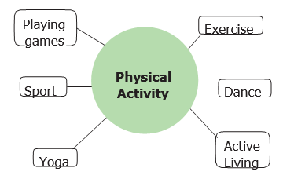
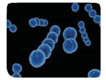
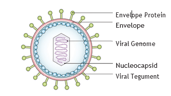
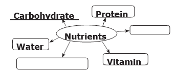
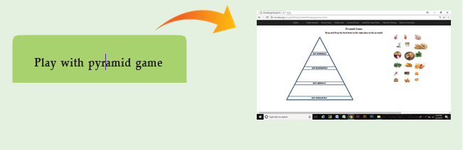

Table 6 Mineral deficiency diseases
Mineral |
Deficiency Disease |
Calcium |
Rickets |
Phosphorus |
Osteomalatia |
Iodine |
Cretinism (in child) Goitre (in adult) |
Iron |
Anaemia |
Activity 8
Visit a nearby Anganwadi centre and find the steps taken by the government to overcome malnutrition and ensure health in the age group 0-5 years.
Physical Exercise
Physical exercise is any bodily activity that enhances or maintains physical fitness and overall health and wellness.

Physical activity is important for many reasons, including:
Increasing growth and development.
Strengthening muscles and the cardiovascular system.
Developing athletic skills, weight loss or maintenance, and enjoyment.
Physical exercise may help to decrease some of the effects of childhood and adult obesity.
Rest
Proper amount of rest is essential for physical and mental health. Rest is as important as nutrition and physical activity for growth and development and good health.
Discuss with Friends
“ Early to bed and early to rise make a man healthy, wealthy and wise”
Benjamin Franklin.
Personal Cleanliness
Hygiene is a set of practices performed to preserve health. According to the World Health Organization (W H O) “hygiene refers to conditions and practices that help to maintain health and prevent the spread of diseases”.
Personal hygiene involves those practices performed by an individual to care for one’s bodily health and well-being, through cleanliness. It includes such personal habit choices as how frequently we bathe, wash hands, trim fingernails, and change clothing. It also includes attention to keep surfaces in the home and workplace, including bathroom facilities, clean and pathogen-free.
Activity 9
One day Rahim, a class six boy vomited three times. He was looking tired and dehydrated. His mother who is working as a nurse prepared a solution and gave it to him to drink. He felt better after sometime and asked his mother what the solution was. His mother told, that it is Oral Rehydration Solution (O R S). Shall we know what an O R S is?
Vomiting or loose motions result in loss of water and cause salt imbalance in the body. Loss of water (dehydration) can lead to serious problems. This can be prevented by consuming O R S at short intervals.
Follow the steps to make O R S at home.
Take a litre of boiled water and cool it.
Add half a teaspoon of salt and six teaspoons of sugar to it.
You can also add a few drops of lemon juice to it. Stir it and give it to the person suffering from vomiting, loose motion or dehydration.
Table 6 Personal Hygiene and Frequency of Cleanliness
Components |
Recommended frequency of cleaning |
Eye hygiene |
Every morning and whenever the face is dirty. |
Hair hygiene |
Weekly twice preferably once in every other day. |
Body hygiene |
Once or twice a day. |
Oral hygiene |
Brushing twice a day. Rinsing after each meal. |
Feet hygiene |
Every day |
Hand hygiene |
Every time after touching contaminated surfaces. Every time before eating and touching clean surfaces. |
Clothe hygiene |
Once or twice a day. |
When you neglect personal hygiene, you are increasing the risk of falling sick. Let us name some of the diseases or conditions caused by microorganism due to the negligence of personal hygiene.
1. Diarrhoea
2. Tooth decay
3. Athlete’s foot (Madurai’s foot)
4. Dandruff.
Do you believe that there are some organisms which you cannot see with your naked eye? Yes. microbes cannot be seen without the help of a microscope.
Most of the microbes belong to four major groups.
Bacteria
Virus
Protozoa
Fungi

Bacteria
Bacteria are very small prokaryotic microorganisms. Bacterial cells do not have nucleus and do not usually have membrane bound organelles.
Bacteria can exist either as independent organisms or as parasites.
They invade tissues.
They produce pus or harmful wastes.
Do you Know?
Disease
Disease is a definite pathological process having a characteristic set of signs and symptoms.
Disorder
Disorder is a derangement or abnormality in function.
Table 7 Bacterial Diseases
Serial Number |
Bacterial diseases |
Mode of transmission |
1 |
Cholera |
Contaminated water |
2 |
Pneumonia |
Inhalation of airborne droplets from a sneeze or cough. |
3 |
Tetanus |
Contamination of wounds with the bacteria. |
4 |
Tuberculosis |
Inhalation of airborne droplets from a sneeze or cough. |
5 |
Typhoid |
Contaminated food or water |
Virus
Virus is an infective agent that typically consist of nucleic acid molecule in a protein coat. It replicates only inside the cells of other living organisms. Virus can infect all types of life forms like plant, animals and microorganisms. They invade living normal cells and use their cell machinery to multiply. They can kill, damage or change the cells and make you sick.

Do you Know?
A Virus that contains R.N.A. instead of D.N.A. is called a Retrovirus.
Diseases caused by Virus
1. Common cold
2. Influenza
3. Hepatitis
4. Polio
5. Smallpox
6. Chicken pox
7. Measles
Discuss in your classroom
Is virus a living thing or non-living thing?
Suggested project
Get a vaccination schedule from a nearby doctor or a hospital. From the list, identify the bacterial diseases and the viral diseases for which vaccination is given.
There are six nutrients. They are: Carbohydrate, Fats, Protein, Vitamins, Minerals and Water
Kwashiorkor and Marasmus are protein deficiency diseases.
Night blindness, scurvy, rickets and beriberi are vitamin deficiency diseases.
Bacteria is a prokaryotic microorganism.
Cholera, typhoid and pneumonia are bacterial diseases.
Influenza, common cold and chicken pox are viral diseases.
1. Our body needs dash for muscle building.
a) carbohydrate
b) fat
c) protein
d) water
2. Scurvy is caused due to the deficiency of dash
a) Vitamin A
b) Vitamin B
c) Vitamin C
d) Vitamin D
3. Calcium is an example for
a) carbohydrate
b) fat
c) protein
d) minerals
4. Bacteria are very small dash microorganism.
a) prokaryotic
b) eukaryotic
c) protozoa
d) acellular
5. We should include fruits and vegetables in our diet, because dash.
a) they are the best source of carbohydrates
b) they are the best source of proteins
c) they are rich in minerals and Vitamins
d) they have high water content
1. There are three main nutrients present in food.
2. Fats are stored as energy by our body.
3. All bacteria have flagella.
4. Iron helps in the formation of hemoglobin.
5. Virus can grow and multiply outside host.
1. Malnutrition leads to dash.
2. Iodine deficiency leads to dash in adults.
3. Vitamin D deficiency causes dash.
4. Typhoid is transmitted due to contamination of dash and water.
5. Influenza is a dash disease.
1. Rice: Carbohydrate: Pulses: dash.
2. Vitamin D: Rickets: Vitamin C: dash.
3. Iodine: Goiter: Iron:dash.
4. Cholera: Bacteria: Smallpox: dash.
1 |
Vitamin A |
a |
Rickets |
2 |
Vitamin B |
B |
Night blindness |
3 |
Vitamin C |
c |
Sterility |
4 |
Vitamin D |
d |
Beri-Beri |
5 |
Vitamin E |
e |
Scurvy |
VI. Complete the diagram.

1. Write two examples for each of the following.
a) Food items rich in fat.
b) Vitamin deficiency diseases.
2. Differentiate between carbohydrate and protein.
3. Define balanced diet.
4. Why should fruits and vegetables not be washed after cutting?
5. Mention any two viral diseases.
6. What are the main features of a microorganism?
1. Tabulate the vitamins and their corresponding deficiency diseases.
ICT CORNER
Balanced food

Steps:
• To learn and know more about balanced food, Go to google or browser and type ninindia nutrition games
• When the homepage opens click pyramid game
• drag and drop the each foodmitem in the pyramid.
URL:
http://ninindia.org/Amulya%20Nutrition%20Games/index.html
*Pictures are indicative only